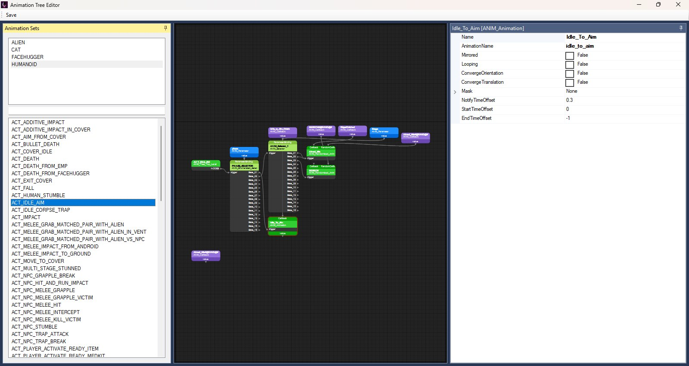
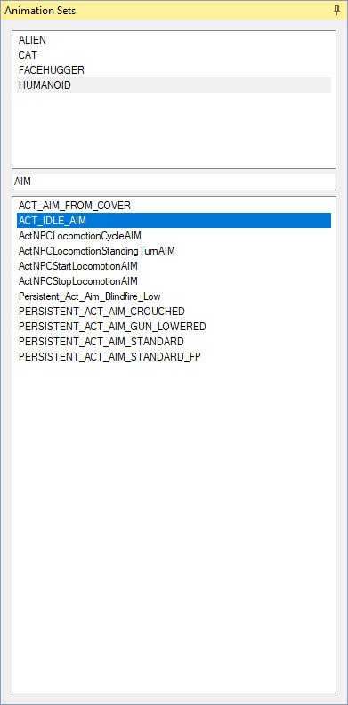
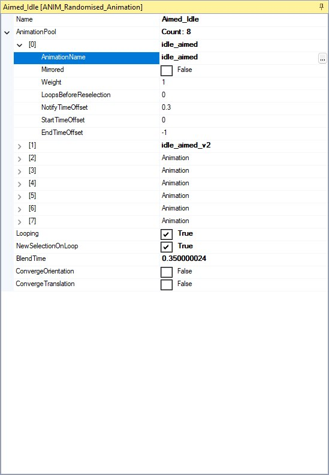
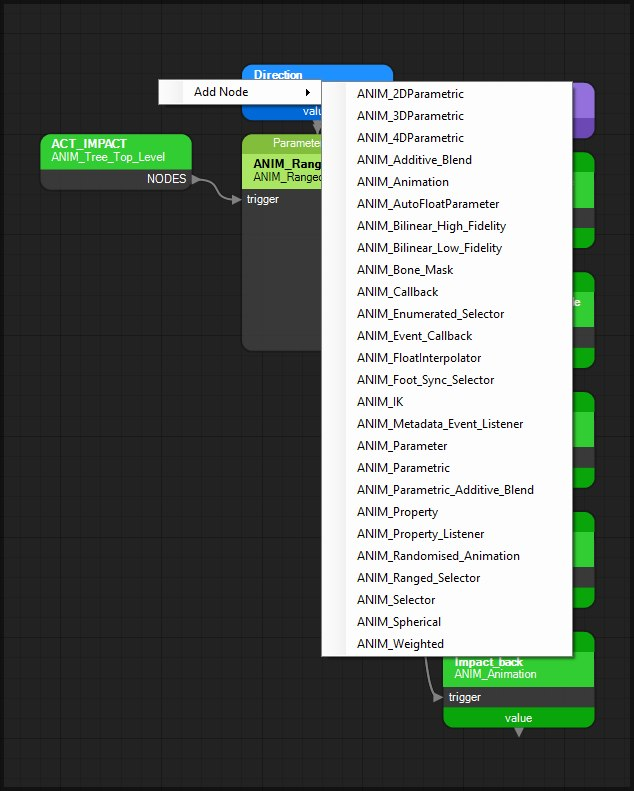
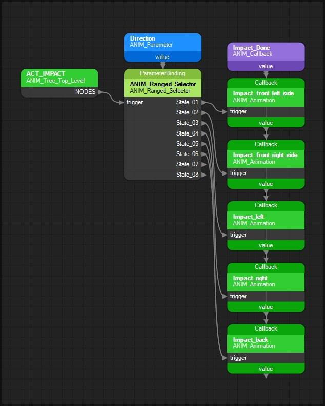

Experimental. Support for editing animation trees is early and incomplete. Expect rough edges — the editor will be improved and expanded over time.
Hardcoded parameters & callbacks. The game drives many animation trees through fixed parameter and callback names (via parameter / callback nodes). Those hooks are hardcoded in the engine — adding new ones, or renaming existing parameter / callback nodes, may do nothing or cause issues. Work with the parameters and callbacks already in the tree, and with the values they supply.
Open View → Animation Tree Editor to launch the Animation Tree Editor, shown below with a tree open. Animation trees live inside ANIMATION.PAK as ANIM_TREE_DB databases — they choose, blend, and layer clips based on parameters and game context.

The Animation Tree Editor with HUMANOID › ACT_IDLE_AIM open and the Idle_To_Aim leaf selected.
This editor is separate from the Animation Editor, which browses the clips themselves. Use this one when you need to inspect or change tree graphs, node parameters, and wiring. The first time it opens after OpenCAGE starts there is a pause of a few seconds while the contents of ANIMATION.PAK are parsed — the window appears once that finishes.
For a full catalogue of node types, parameters, and pins, see Animation Tree Nodes.
The editor uses a docked layout — see the screenshot in the Introduction: animation sets and trees on the left, the open tree's graph in the centre, and the selected node's properties on the right. Panels cannot be closed from their tabs.
Left dock — split into two unlabelled lists:
ALIEN, CAT, FACEHUGGER and HUMANOID in the retail data)Type in the box between the two lists to filter the trees by name. The match is case-insensitive, so AIM lists ACT_IDLE_AIM alongside Persistent_Act_Aim_Blindfire_Low, as shown below. Changing set clears the search and reloads that set's trees.

HUMANOID selected above, AIM typed in the search box, and the lower list reduced to the eleven HUMANOID trees whose names contain it.
Select a tree to open its graph in the centre. Only one tree is open at a time — selecting another replaces it.
The centre of the window shows the open tree as a node graph. Each node's title shows its name with its ANIM_* type underneath, and the title colour follows the type: leaves and the tree root green, selectors pale green, parameters / properties / interpolators blue, callbacks violet, parametrics orange, additive blends lilac, bilinear blends dark purple, metadata event listeners red, and the rest (bone masks, IK, weighted, spherical, event callbacks, property listeners) white. Flow runs left-to-right from the tree root (ANIM_Tree_Top_Level); the parameter and callback nodes that feed a node are laid out above it. The screenshot in Pins & Connections shows a small tree at a readable scale.
Drag with the middle mouse button to pan and roll the wheel to zoom (no modifier needed); dragging with the left button on empty space draws a selection rectangle instead. Select a node to populate the properties panel.
Right dock — property grid for the selected node, captioned with the node's name and type. Every node has an editable Name; other fields depend on the node type (strings, floats, bools, enums, bone-mask flags, nested arrays, and so on), as in the randomised leaf below.

Node Properties for Aimed_Idle (ANIM_Randomised_Animation): bold rows differ from the type's defaults, and the selected AnimationName row shows the picker button.
Graph wiring — children, callbacks, parameter bindings and state targets — is deliberately not listed in the grid: those are the links on the canvas, and you change them there. Values that differ from the node type's defaults are shown in bold. Rows that name an animation (AnimationName) or a blend set (BlendSet, ExtraBlendSet) get a ... button when selected, which opens the Animation Editor (limited to the tree's set) or the Blend Set Editor as a picker — or just type the name.
Pick a set and tree from the left, then edit on the graph and in the properties panel.
Click a node on the canvas to select it. The properties panel updates immediately. Multi-select follows the graph editor's normal selection behaviour where supported.
With a node selected, edit values in the right-hand grid:
AnimationPool on randomised leaves, or States on selectors / parametrics): the array row reads Count: N and expands to one row per slot, each summarised by its animation name or value — unused pool slots just read Animation, as in the Node Properties screenshot above. Empty animation pool slots are skipped on saveSee Animation Tree Nodes for which fields each type exposes.
Right-click empty canvas space and choose Add Node, then pick a type from the submenu (exact ANIM_* names, alphabetically), as shown below. The tree root cannot be added from this menu — it already exists for every tree.

New nodes are named after their type (Selector, then Selector_1 and so on), appear at the click position and are selected straight away so the properties panel shows them. Wire them into the graph with pins, and set parameters in the properties panel.
On the graph canvas:
Only the item that applies is shown: Add Node on empty space (as in the Adding Nodes screenshot), Delete Node on a node, Delete Link on a link.
Pins are colour-coded by role and sit on fixed sides of each node:
trigger)State_01, base_node, NODES)value)Connect a provider's bottom value pin to a consumer's top pin. Connect flow outputs on the right to the next node's left trigger. The small tree below has all four sides in use.

HUMANOID › ACT_IMPACT: flow runs root → selector → leaves left-to-right; the parameter and callback above feed top pins from their bottom value pins.
Reading it left-to-right: the root's NODES output runs into the ranged selector's trigger; the selector's State_01 to State_05 pins fan out to the five Impact_* leaves (State_06 onwards are unused); the Direction parameter's bottom value pin feeds the selector's ParameterBinding pin on top; and the Impact_Done callback's value pin is wired to the Callback pin of all five leaves — the leaves sit directly beneath it, so those five links overlap into one vertical line down the column (the small triangle under every value pin is the pin's own marker, not a link). Parameter, property, callback, and similar nodes have no trigger pin — they only expose a value output.
Use the toolbar Save button in the Animation Tree Editor window — the only toolbar item, top-left in the Introduction screenshot. That closes the game if it is running, rewrites every tree database into ANIMATION.PAK, and confirms with an "Animation trees saved." message — it is separate from File → Save Level in the script editor.